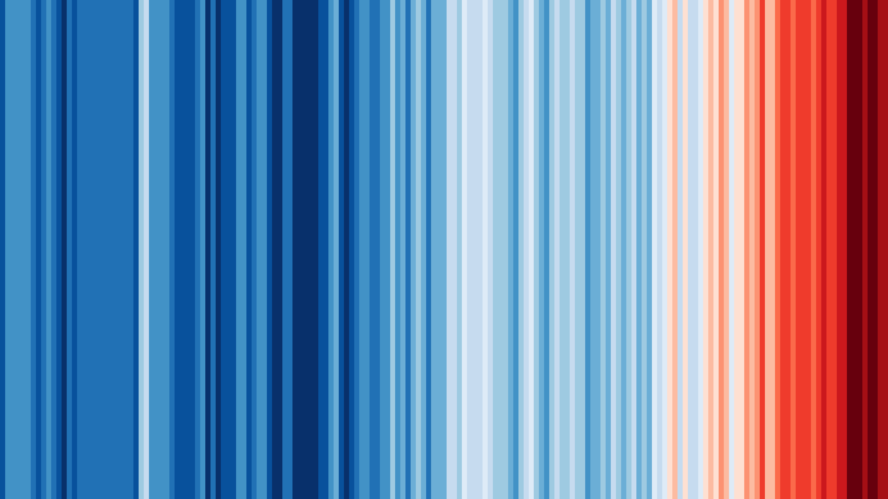
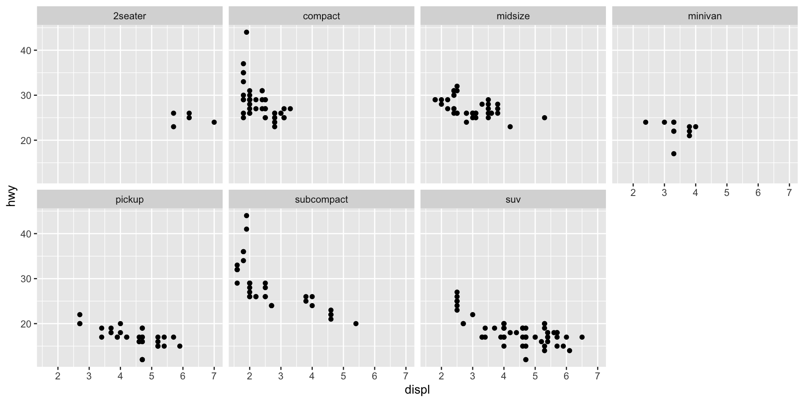

── Attaching core tidyverse packages ──────────────────────── tidyverse 2.0.0 ──
✔ dplyr 1.1.2 ✔ readr 2.1.4
✔ forcats 1.0.0 ✔ stringr 1.5.0
✔ ggplot2 3.4.3 ✔ tibble 3.2.1
✔ lubridate 1.9.2 ✔ tidyr 1.3.0
✔ purrr 1.0.2
── Conflicts ────────────────────────────────────────── tidyverse_conflicts() ──
✖ dplyr::filter() masks stats::filter()
✖ dplyr::lag() masks stats::lag()
ℹ Use the conflicted package (<http://conflicted.r-lib.org/>) to force all conflicts to become errors
Linking to GEOS 3.11.0, GDAL 3.5.3, PROJ 9.1.0; sf_use_s2() is TRUE
Economic Policy Visualization
Climate · Facets
What does global warming mean?
Source: Datawrapper
Global warming stripes for 1850-2022

Source: Ed Hawkins
Global warming stripes explained

Source: Ed Hawkins
Ocean surface temperature at record high
Source: Guardian
Arctic ice at record low
Source: New York Times
Number of very hot days (+30°C) in Vienna
Source: ZAMG
What is ecological economics?
- Economics of natural resources has a long history dating back to classical economists like Malthus and the phyisocrats where land is source of wealth
- 1960s: Revival of Pigou’s concept of externalities to describe pollution
- 1970s: Are there limits to growth? (Meadows et al., 1972)
- 1980s: Institutionalization of ecological economics with establishment of the International Society for Ecological Economics in 1988 (Røpke, 2004)
- Ecological economics addresses the interdependence and coevolution of human economies and natural ecosystems
Climate in economic policy
- Ecological sustainability is no explicit goal in traditional economic policy frameworks
- Climate and the environment are addressed in several SDGs, like in SDG 7 (clean energy) or SDG12 (responsible consumption & production)
- SDG 13: “Take urgent action to combat climate change and its impacts” but only vague targets
- The UN “Paris agreement” of 2015 is a legally binding treaty to limit the temperature increase to 1.5°C above pre-industrial levels and to reduce global emissions by 43% by 2030.
Decoupling growth from emissions
Attention!
- Consumption-based versus production-based emissions!
- These countries represent less than 15% of global population and less than 30% of global emissions!
- Global emissions still continue to rise!
Climate crisis and inequality
- There is ample evidence of inequality in (consumption-based) greenhouse gas emissions. However, studies typically find emissions inequality being smaller than income or wealth inequality.
- 20 global billionaires emit 164,000 tons of CO2e whereof two thirds origin from their yachts only. The global average is 5 tons per capita, thus 20 indiviuals emit 100 tons. (Barros/Wilk, 2021)
- In the EU, top 1% of households emit 22 times the per capita climate target of 2.5 tons of CO2e. Only 5% of EU households live within the targets. (Ivanova/Wood, 2020)
- In Austria, the top decile in the income distribution emits 4 times more than the bottom decile. (Theine et al., 2022)
Global emissions inequality
Source: Chancel et al. (2023)
A framework for climate policy
Source: Chancel et al. (2023)
Facets

What are facets?
Facets show small multiples (or subplots) for different subsets of data
| Code | Result |
|---|---|
| facet_wrap(~continent) | Plot for each continent |
| facet_wrap(continent ~ year) | Plot for each continent/year |
| facet_wrap(…, ncol = 1, nrow = 1) | Specify grid layout with columns and rows |
| facet_wrap(…, scales = “fixed”) | Specify fixed axis, alternatively “free_x” or “free_y” |
| facet_wrap(…, dir = “h”) | Direction of facets, horizontal (“h”) or vertical (“v”) |
| facet_wrap(…, strip.position = “top”) | Positioning of the facet labels (strips) |
Note: facet_grid() produces a grid of plots for each combination of variables, even if some plots are empty.
Create facets by a variable of interest
ggplot(data = mpg) +
geom_point(aes(x = displ, y = hwy)) +
facet_wrap(~class, nrow = 2)
Bibliography
References
Barros, Beatriz/Wilk, Richard (2021). The outsized carbon footprints of the super-rich. Sustainability: Science, Practice and Policy, 17(1), 316–322. DOI: 10.1080/15487733.2021.1949847
Chancel, Lucas/Bothe, Philipp/Voituriez, Tancrède (2023). Climate inequality report. World Inequality Lab Study 2023/1.
Ivanova, Diana/Wood, Richard (2020). The unequal distribution of household carbon footprints in europe and its link to sustainability. Global Sustainability, 3(e18), 1–12. DOI: 10.1017/sus.2020.12
Meadows, Dennis L./Meadows, Donella/Randers, Jørgen/Behrens, William W. (1972). The limits to growth. Universe Books, New York.
Røpke, Inge (2004). The early history of modern ecological economics. Ecological Economics, 50(3-4), 293–314. DOI: 10.1016/j.ecolecon.2004.02.012
Theine, Hendrik/Humer, Stefan/Moser, Mathias/Schnetzer, Matthias (2022). Emissions inequality: Disparities in income, expenditure, and the carbon footprint in austria. Ecological Economics, 197, 107435. DOI: 10.1016/j.ecolecon.2022.107435